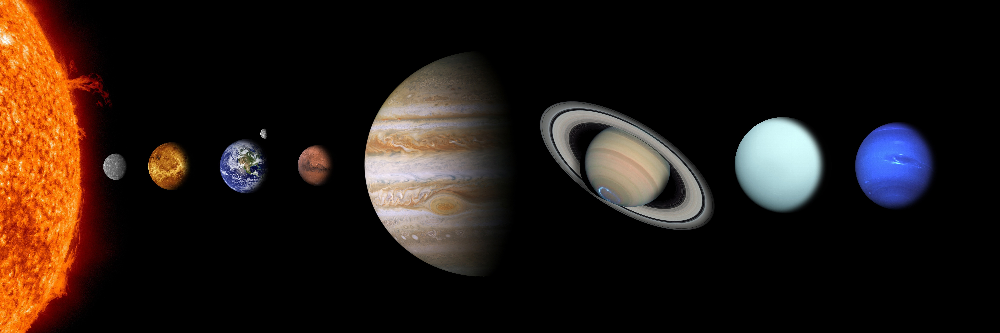

Le Système Solaire est l'ensemble constitué du Soleil et de tous les corps célestes qui gravitent autour de lui. Les corps célèstes représentent 8 planètes confirmées , accompagnées de leurs satellites naturels, les 5 planètes naines, ainsi que les milliards de petits corps (étoiles, astéroïdes, comètes, poussière cosmique...)
Une planète est un corps céleste orbitant autour du Soleil ou d'une autre étoile, possédant une masse suffisante pour que sa gravité la maintienne en équilibre hydrostatique.
Voici une liste des noms des 8 planètes confirmées du Système Solaire, classées de la plus proche à la plus éloignée du Soleil :
- Mercure
- Vénus
- Terre
- Mars
- Jupiter
- Saturne
- Uranus
- Neptune

Le Soleil est à gauche, et Neptune à droite
Une planète naine est un objet céleste du Système solaire de classe intermédiaire, entre une planète et un petit corps du Système solaire.
Voici une liste des noms des 5 planètes naines confirmées du Système Solaire :
- Cérès
- Pluton
- Eris
- Hauméa
- Makémaké